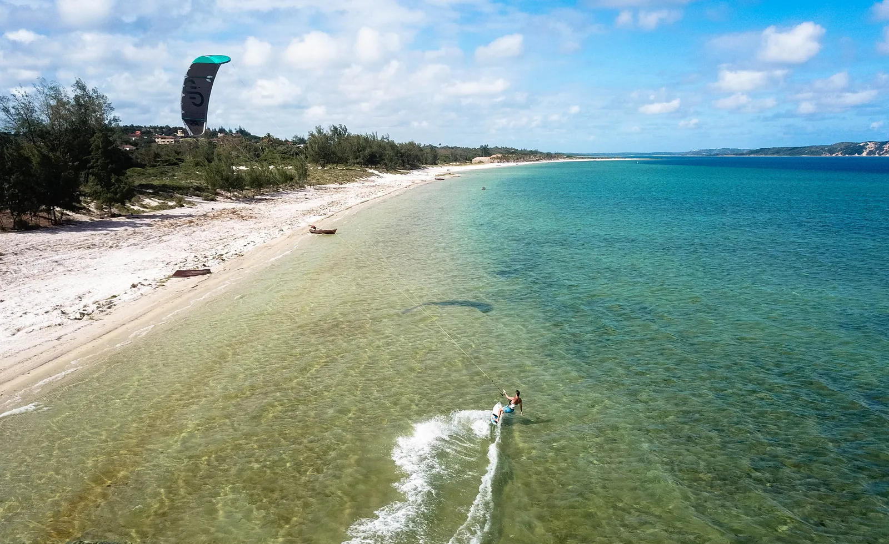
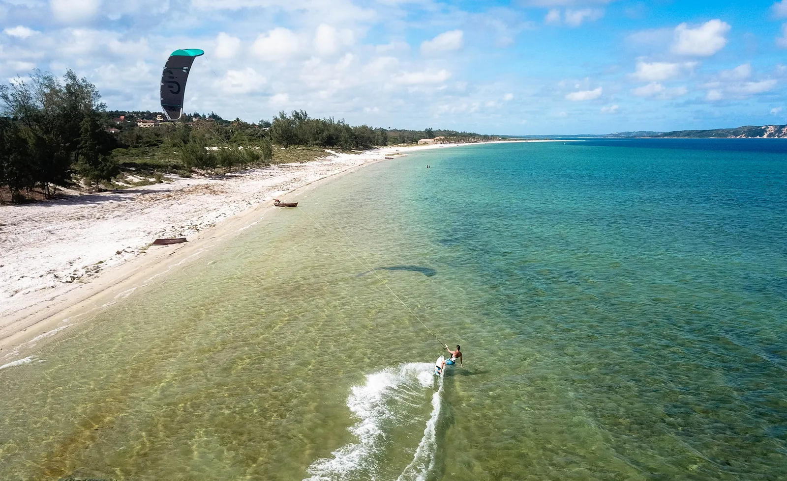

The Kite Center
Everything for your passion
Bilene Kite Center
The center is based on Bilene beach. Equipped with a Storage, shower, rinsing area, drying area, chilling area, adjacent to the Beach-bar of the Palmeiras hotel complex. The center is located directly on the spot, in a clear and shallow lagoon, with direct access to the Indian Ocean. It is served directly by road and benefits from all the comforts of Palmeiras. Spot Description


An idyllic setting for kite and wing
Come and discover the perfect spot, in a new heavenly destination, with an amzing natural typical african landscpae, far from the crowded spots.
 

Chilling, bar, restaurant
The center is located on the Palmeiras beach, you will enjoy all its facilities between 2 sessions: Restaurant and Beach Bar with a direct view of the riders, equipped bungalows, holiday homes, camping, shop, wifi, welcoming and smiling team, the Palmeiras is one of the very first establishments of the lagoon. More info : The Palmeiras

Kite equipement Eleveight
Bilene Kite Center is a partner of Eleveight, the rising kite brand, created by enthusiasts riders, for enthusiasts riders. Our center offers a complete range of new vintage kites, bars and boards, renewed every year. In 2022, the wing is entering into our quiver. More information about Eleveight


Guiding, speedspots, downwinds, trips
There are many flat areas with perfectly flat water on the lagoon, accessible directly from the center or in a few minutes by 4x4. In boat drop-off with coolers and sandwiches so as not to lose a drop of session on the water. The gigantic lagoon is ideal for long kite rides in a magnificent setting of tropical Africa. We will end our journey in the best seafood restaurant in the lagoon.


SUP Paddle
The center offers a whole range of SUPs to explore the lagoon. Perfect playground in the early morning before the wind sets in for the rest of the day. Lessons, rentals, or trips organized with our instructor in this incredible African landscape.